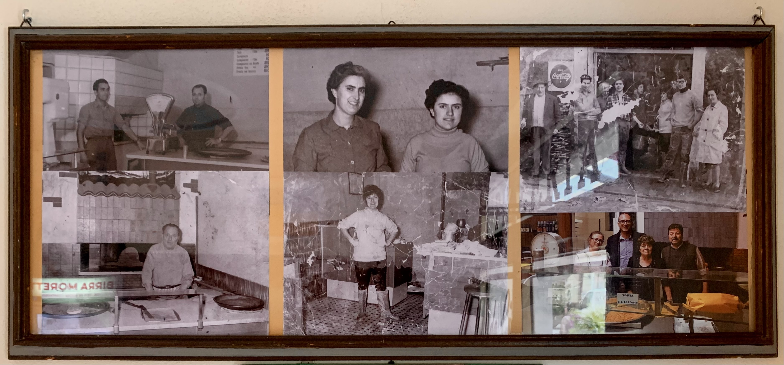
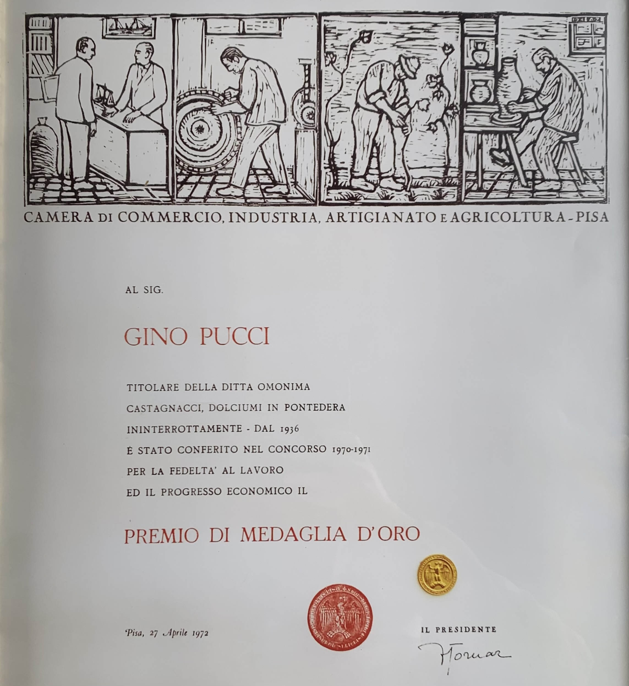
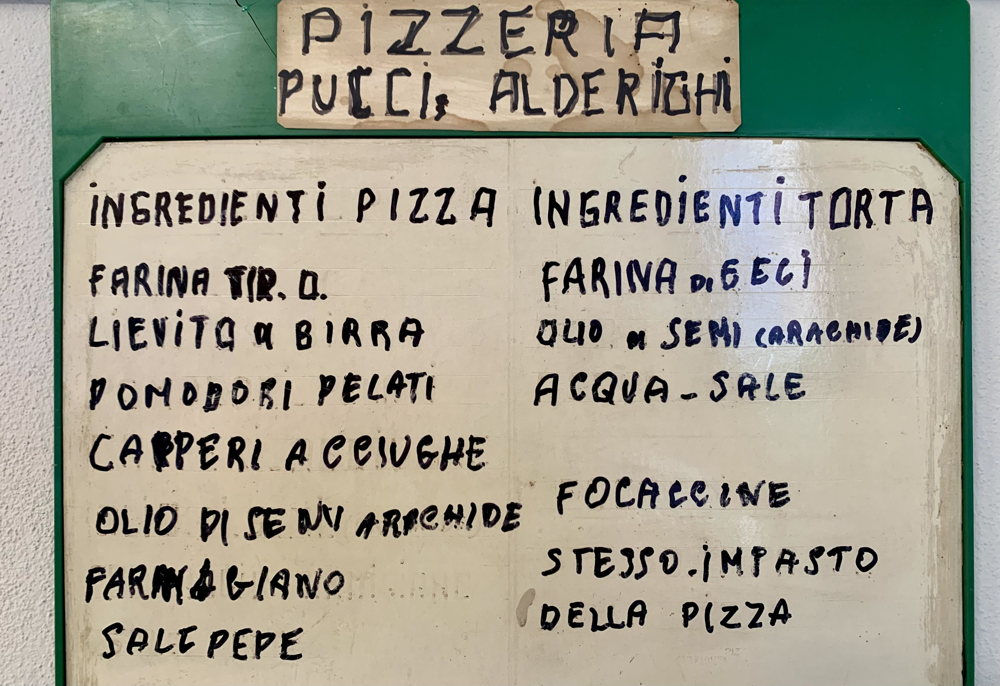
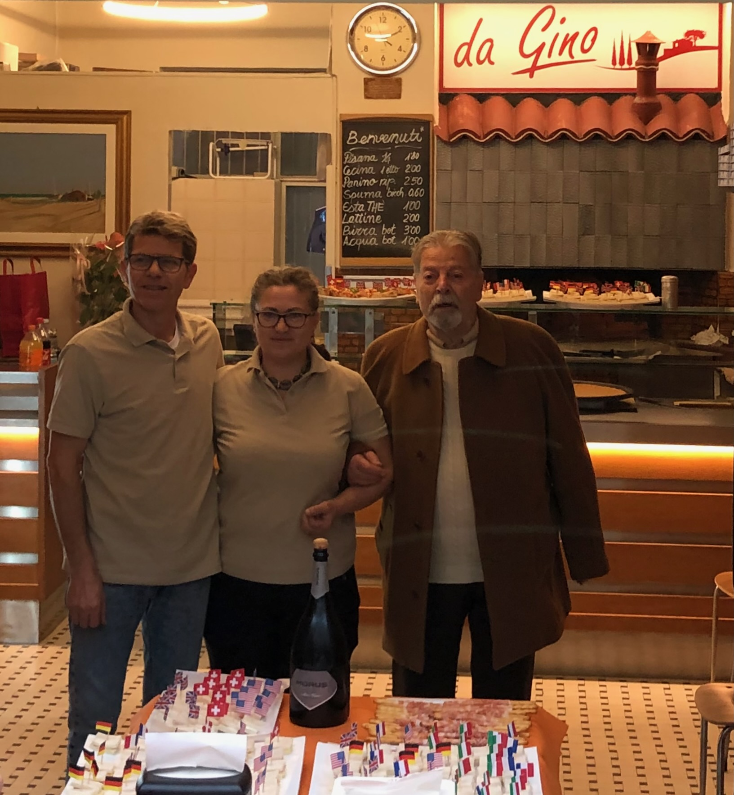

The story of this pizzeria begins back in 1936 when Mr. Pucci Gino decided to open it first on a street called Via della Misericordia near his home, and then relocated due to World War II to Via Dante. In 1961, he permanently moved to Via Roma 47 where, even to this day, Cecina (or torta), Pisana Pizza (capers, anchovies, and Parmesan), and Focaccine are baked every day for both lunch and dinner, strictly following Mr. Gino's original recipe.

Owners, staff, and familiar faces who shaped the soul of Pizzeria da Gino across the decades — a portrait proudly displayed on the walls of the pizzeria.
Proprietari, personale e volti familiari che hanno plasmato l'anima della Pizzeria da Gino nel corso dei decenni — un ritratto esposto con orgoglio sulle pareti della pizzeria.
Notable actors and singers have passed through these doors; Riccardo Fogli, for example, used to come here for a snack as a young man. Even after becoming famous, he would return to Pontedera after his tours to enjoy Mr. Gino's specialties. The pizzeria became a fixed appointment for major actors who performed on the stage of the Roma cinema in Pontedera during the 1980s. Not to mention that in 2018, Tommaso Cavallini filmed a scene from his film dedicated to Pontedera right here.
"A fixed appointment for all residents of Pontedera — not only for Cecina and Pizza, but for the warmth and wit of the people behind the counter."

The Gold Medal awarded to Mr. Gino Pucci in 1972 by the Chamber of Commerce of Pisa — a tribute to his exceptional and unwavering dedication to the art of Tuscan pizza-making.
La Medaglia d'Oro conferita al Sig. Gino Pucci nel 1972 dalla Camera di Commercio di Pisa — un riconoscimento per il suo straordinario e instancabile impegno nell'arte della pizza toscana.
This pizzeria has withstood the passage of time with the same dedication to its work for which it received the Gold Medal in 1972 from the Chamber of Commerce. In 1975, the pizzeria passed into the hands of the legendary couple Pucci Paola (Gino's daughter) and Alderighi Franco, to whom we owe special thanks for their masterful, experienced, and dedicated interpretation of the craft throughout all these years. December 23, 2023 was Alderighi's last day of work, and with great emotion, he handed over the keys to the new owners.

The original handwritten recipe for pizza and cecina dough — unchanged since Mr. Gino first crafted it, still hanging on the walls of the pizzeria as a daily reminder of the tradition that endures.
La ricetta originale scritta a mano per l'impasto della pizza e della cecina — invariata da quando il Sig. Gino la elaborò per la prima volta, ancora appesa alle pareti della pizzeria come quotidiano omaggio alla tradizione.
After renovation and reorganization work, the place has nonetheless maintained 80% of its original appearance, upon request of the former owner, customers, and citizens of Pontedera. The new management has thirty years of experience in the restaurant business and has set itself the goal of continuing the tradition of this historic establishment, while also proposing a wider variety of products and new flavours.

The new ownership that embraced Pizzeria da Gino in 2024, expanding its offerings while faithfully preserving the flavours, warmth, and spirit that Pontedera has cherished for nearly ninety years.
La nuova proprietà che ha accolto la Pizzeria da Gino nel 2024, ampliandone l'offerta e preservando fedelmente i sapori, il calore e lo spirito che Pontedera ha custodito per quasi novant'anni.
— pizzeria da Gino
La storia di questa pizzeria comincia nel lontano 1936 quando il Signor Pucci Gino decise di aprire prima in una via della Misericordia sotto casa sua per poi trasferirsi per causa della seconda guerra mondiale in via Dante. Nel 1961 si trasferisce definitivamente in via Roma 47 dove tuttora si sfornano tutti i giorni anche a pranzo la Cecina (o torta), la Pizza Pisana (capperi acciughe e parmigiano) e le Focaccine seguendo rigorosamente la ricetta originale del signor Gino.
Owners, staff, and familiar faces who shaped the soul of Pizzeria da Gino across the decades — a portrait proudly displayed on the walls of the pizzeria.
Proprietari, personale e volti familiari che hanno plasmato l'anima della Pizzeria da Gino nel corso dei decenni — un ritratto esposto con orgoglio sulle pareti della pizzeria.
Non sono mancati passaggi di attori e cantanti tanto per citarne uno, Riccardo Fogli che da giovane faceva merenda qui. Anche quando famoso dopo le tournee tornava a Pontedera per gustare le specialità del Sig. Gino. La pizzeria era diventata un appuntamento fisso anche per grandi attori che qua a Pontedera solcavano il palco del cinema Roma negli '80. Senza dimenticare che nel 2018 Tommaso Cavallini girò una scena del suo film dedicato a Pontedera proprio qui.
"Appuntamento fisso per tutti i pontederesi — non solo per la Cecina e la Pizza, ma per il calore e la simpatia di chi stava dietro al bancone."
The Gold Medal awarded to Mr. Gino Pucci in 1972 by the Chamber of Commerce of Pisa — a tribute to his exceptional and unwavering dedication to the art of Tuscan pizza-making.
La Medaglia d'Oro conferita al Sig. Gino Pucci nel 1972 dalla Camera di Commercio di Pisa — un riconoscimento per il suo straordinario e instancabile impegno nell'arte della pizza toscana.
Questa Pizzeria ha resistito al passare del tempo con la stessa fedeltà al lavoro per la quale ricevette la Medaglia d'Oro nel 1972 dalla Camera di Commercio. Nel 1975 la pizzeria passa in mano alla mitica coppia Pucci Paola (figlia di Gino) e Alderighi Franco, ai quali va un ringraziamento speciale perché hanno saputo interpretare il mestiere con maestria, esperienza e dedizione in tutti questi anni. Il 23 dicembre 2023 è stato l'ultimo giorno di lavoro per Alderighi che con molta sofferenza ha consegnato le chiavi ai nuovi proprietari.
The original handwritten recipe for pizza and cecina dough — unchanged since Mr. Gino first crafted it, still hanging on the walls of the pizzeria as a daily reminder of the tradition that endures.
La ricetta originale scritta a mano per l'impasto della pizza e della cecina — invariata da quando il Sig. Gino la elaborò per la prima volta, ancora appesa alle pareti della pizzeria come quotidiano omaggio alla tradizione.
Dopo i lavori di sistemazione e riordino della pizzeria, il locale ha comunque mantenuto per l'80% il suo aspetto originale, su richiesta del vecchio proprietario e dei clienti, nonché dei cittadini di Pontedera. La nuova gestione ha un'esperienza trentennale nella ristorazione e si è posta l'obiettivo di proseguire nella tradizione di questa attività storica, proponendo comunque anche una più ampia varietà di prodotti e gusti nuovi.
The new ownership that embraced Pizzeria da Gino in 2024, expanding its offerings while faithfully preserving the flavours, warmth, and spirit that Pontedera has cherished for nearly ninety years.
La nuova proprietà che ha accolto la Pizzeria da Gino nel 2024, ampliandone l'offerta e preservando fedelmente i sapori, il calore e lo spirito che Pontedera ha custodito per quasi novant'anni.
— pizzeria da Gino